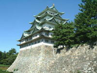
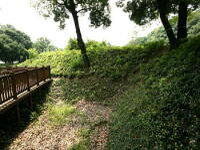
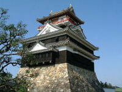
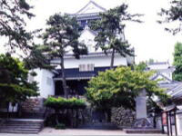

北海道
北海道と言えば、どこまでも続くまっすぐな道路、そして広大な大地をイメージする方が多いのではないでしょうか。そのほかには、サケ・ヒグマ・キタキツネなどを連想する人もいることでしょう。
愛知県
愛知県には数多くの城跡が存在する。現在では観光地として開放されているところが多く、外国の観光客にも人気の観光スポットとなっている。
| 写真 | 城名 | 住所 |
|---|---|---|
|  | 名古屋城 | 名古屋市中区本丸 |
|  | 小牧山城 | 小牧市堀の内1丁目 |
| 長久手城 | 愛知郡長久手市城屋敷2408 | |
|  | 清洲城 | 清須市市場字古城 |
|  | 岡崎城 | 岡崎市康生町 |
沖縄県
沖縄の魅力は美しい海だけではありません。島ごとに育まれてきた特有の文化や、そこでしか味わえない、ゆったりとした時間の流れも観光客を惹きつける大きな魅力となっています。沖縄には多くの島がありますが、比較的大きな島としては次の4つが挙げられます。
- 石垣島
- 西表島
- 宮古島
- 久米島